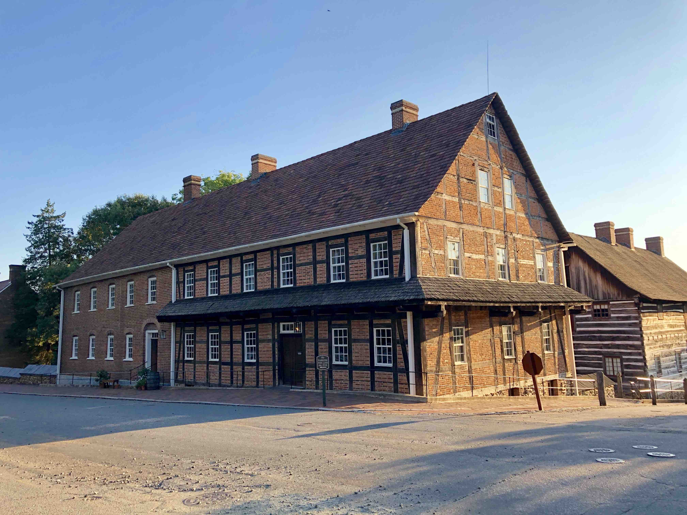
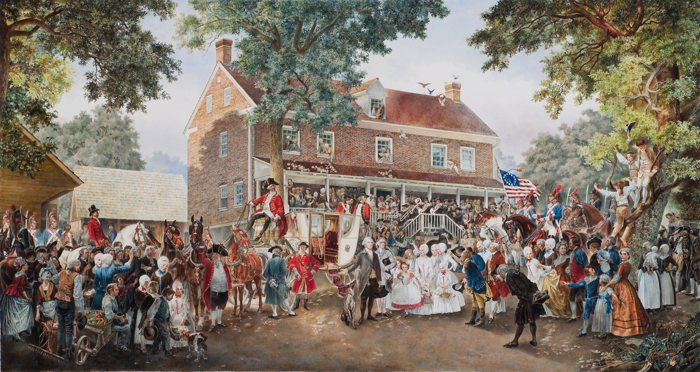
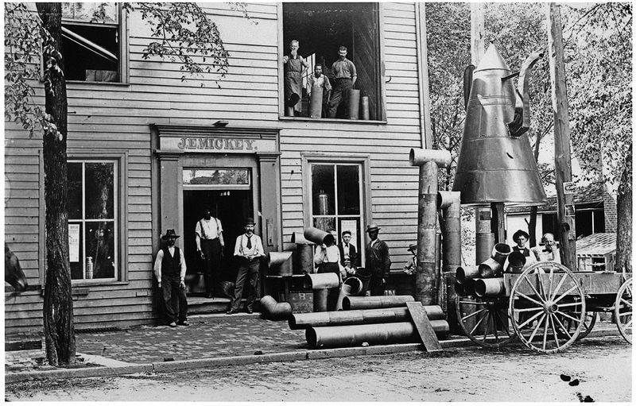
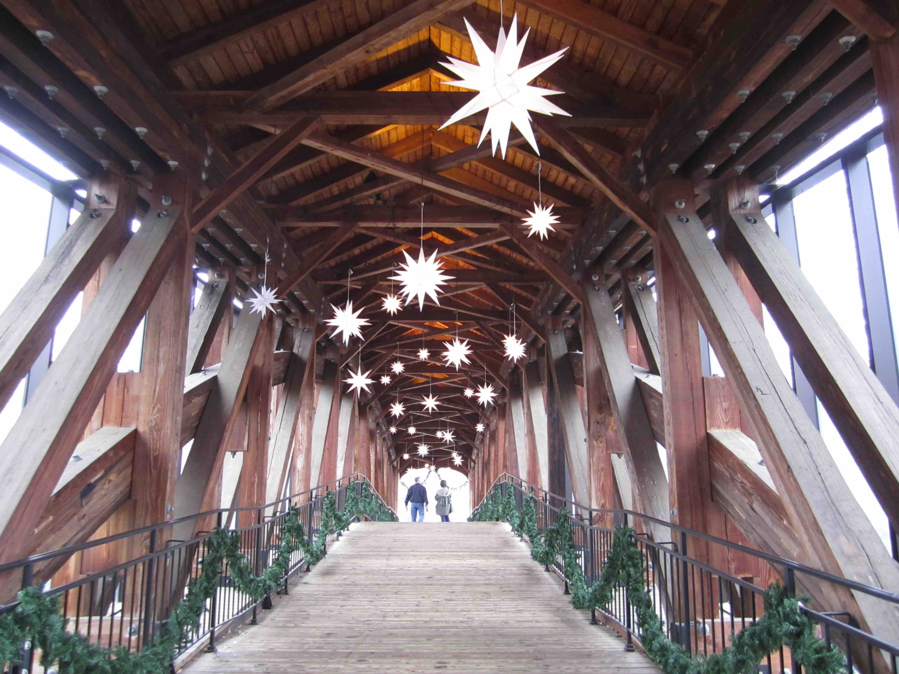

Old Salem
An introduction to its history...
After the settlement in Bethabara, the Moravians began construction on Old Salem in 1766. It was positioned in the middle of Wachovia. The name Salem came from "Shalom" meaning "Peace." Included in the initial construction efforts, were the main church building as well as a Single Brothers' House and Single Sisters' House for the unmarried members of the congregation
Single Brother's House...
The Single Brothers' House is arguably the most well known building in Old Salem. It was originally constructed in 1786. For its initial period, it served as a house for the single men of the community, but has since been the host of a variety of different things. In 1823, after the Single Brothers' House closed, part of it was used as apartments and another part of it was used as a Boys School. After 6 years, the school moved and the building became primarily known as the "Widow's House." After that, the Single Sisters took over the property until it became a part of the restoration effort of "Old Salem" in 1964. To this day, it is still frequently visited and used as part of reenactments and teaching.
SINGLE BROTHERS HOUSE IN OLD SALEM
For example, the Candle Tea event takes place in the Single Brother's House each year during Advent. It's a fundraiser by the Women's Fellowship of Home Moravian Church for various local non-profits. For many, participating in the Candle Tea marks the beginning of the Christmas season. It's a way of encountering and experiencing many of Old Salem's Moravian traditions. This includes listening to a Moravian brass band, singing carols, watching a candle-making demonstration, enjoying sugar cake and seeing the Old Salem nativity scene.
I remember going in a group, either with school or a Girl Scout troop, and getting to see how the candles were made. These same candles are used across Winston-Salem in various lovefeast services, including one at my own Home church on Christmas Eve. The sugar cake is also one of the best things I've ever tasted. Moravian desserts around Christmas time are always the best.
The Single Brothers' House is also home to Winston-Salem's most well known ghost story, The Little Red Man. In 1786, when the building was first being constructed, a shoemaker named Andreas Kresmer was working on the foundation beneath the building and was a victim of falling earth bank. Following his passing, the sounds of a shoemaker's hammer tapping could be heard throughout the house. Others have seen a short man wearing a red cap, similar to Kresmer's which he wore the night of his passing, moving through the hallways. Sightings took place through the Single Brothers' House becoming the "Widow's House" but apparently, the ghost was later laid to rest by a minister and has not been seen or heard from since.
A visit from the President...
Another interesting story from Old Salem was the time George Washington visited the town. George Washington took a tour of the southern states both to learn about the country as a whole and to provide citizens with an opportunity to meet him. In 1791, just two years into his presidency he arrived in Salem.
WATERCOLOR PAINTING OF GEORGE WASHINGTON'S VISIT TO SALEM, FEATURING SALEM TAVERN IN THE BACKGROUND
In his diary, Washington noted how pleasantly the town appeared surrounded by woods, cultivated fields and beautiful meadows. He also noted the neat orderly appearance of the town and the hard working community. To avoid owing political favors, Washinton sought public accommodations, which led him to stay at the Salem Tavern. Overall, Washington wrote in his diary that he enjoyed his stay in Salem. Since Old Salem became a historical site, the tavern has been restored to resemble how it looked during his visit.
It's a coffee pot...
You may have wondered why the icon representing Old Salem is a coffee pot? In many ways the coffeepot is the official landmark of Old Salem, being featured prominently in Old Salem's logo. It's also considered an unofficial landmark for the city as a whole.
Tbh, I thought it was a teapot this entire time. I only learned it was actually a coffeepot when I began researching this answer. In my defense, I don't drink either coffee or tea and coffee pots look a lot different now than they did when the sculpture was first made.
The coffee pot was originally built in 1858 by Julius and Samuel Mickey, who owned a tin shop on South Main Street. It was intended to be an advertisement for their shop and was originally located by the curb of the street. It was often hit by cars and wagons until 1920 when the city threatened to remove it. Of course nobody liked that, so after some protest the coffee pot was moved further from the street. It was also moved again in 1959 to accommodate US 421 and Salem Parkway and is now located in a traffic island.
PHOTOGRAPH OF THE OLD SALEM COFFEE POT IN FRONT OF JULIUS AND SAMUEL MICKEY'S TIN SHOP
One story I stumbled upon while researching about the coffee pot was that it was actually the source of a number of Halloween pranks back in the early twentieth century. Apparently in like the 1930s some teen boys decided to throw some firecrackers or something into the coffeepot and obviously, that caused a lot of damage. But the funny part is that they might have gotten away with it but part of the DIY firecracker included one of the boy's grandmother's stationary which included her address. So it wasn't all that hard to track down the boys after that and they ended up having to pay to fix the coffee pot. Since then there have been considerably fewer pranks involving the coffee pot.
Moravian Cookies are the best Christmas dessert...
There. I said it. Of all the desserts one might associate with Christmas, the thin cookies associated with the Moravian settlement in Winston-Salem are by far the best (sorry Mom!).
A trip to Mrs. Hanes' Moravian Cookies Factory was always one of my favorite field trips. While located outside of Winston-Salem, in Clemmons, NC, the factory's history is directly tied to the Moravians of Old Salem. I always loved visiting the factory because we got to learn about cookies and how they were made. We also always made sure to pick up a couple packs of cookies to take home. While you can't go wrong with an original Sugar Crisp, my favorites were always the Chocolate Crisp or the Gingersnap Crisp.
A Moravian cookie is a traditional cookie that originated in Moravian settlements in America. It's made from a blend of spices and molasses and is rolled super thin, leading to its reputation as the "World's Thinnest Cookie." It is a very popular Christmas treat especially within the Moravian communities and their encompassing towns, such as Winston-Salem.
Not to brag or anything, but a majority of the first Google search results for Moravian Cookies are directly tied to Winston-Salem, NC. The first four results include one recipe website that first learned about the cookie while studying at Wake Forest in Winston-Salem, Mrs. Hanes' website, Dewey's website, and finally Old Salem's own website.
If you're interested in trying a Moravian Cookie, I would recommend either Mrs. Hanes Moravian Cookies, in Clemmons, or Dewey's, a small chain bakery that was established in 1930 in Winston-Salem.
Moravian Stars shine bright every Christmas...
When you see a Moravian star, it's a good sign that Christmas is coming. The star, comprising 26 points, 18 square and 8 triangular points, was said to have originated at a Moravian Boys' School in Germany in 1830. The star was eventually adopted by the Moravian church and used as a symbol of the Advent season. As such, it is common to see in Old Salem during the Christmas season, though the star is not restricted to use by the Moravian congregation.
The star has become Winston-Salem's official Christmas street decoration, so it's common to see them hanging from lamp posts downtown. You can also spot many of the Moravian stars hanging from porches in various neighborhoods across the city. Wake Forest Baptist Medical Center is home to the largest Moravian star in the world, at 31 feet tall.
One of the best spots to view Moravian Stars is on the Old Salem covered bridge. During the advent season, garlands are draped over the railings and numerous Moravian stars are hung from the covered ceiling providing an iconic Christmas backdrop for any holiday photos.
Are you really from Winston-Salem if you haven't taken at least one family picture or prom photo on this bridge?
Covered bridge at Old Salem